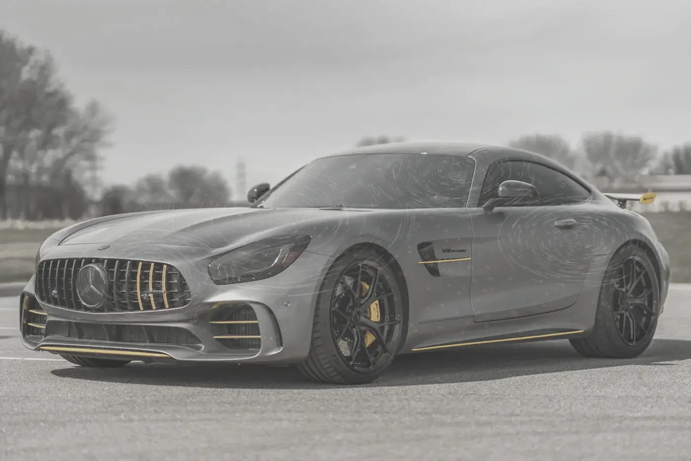
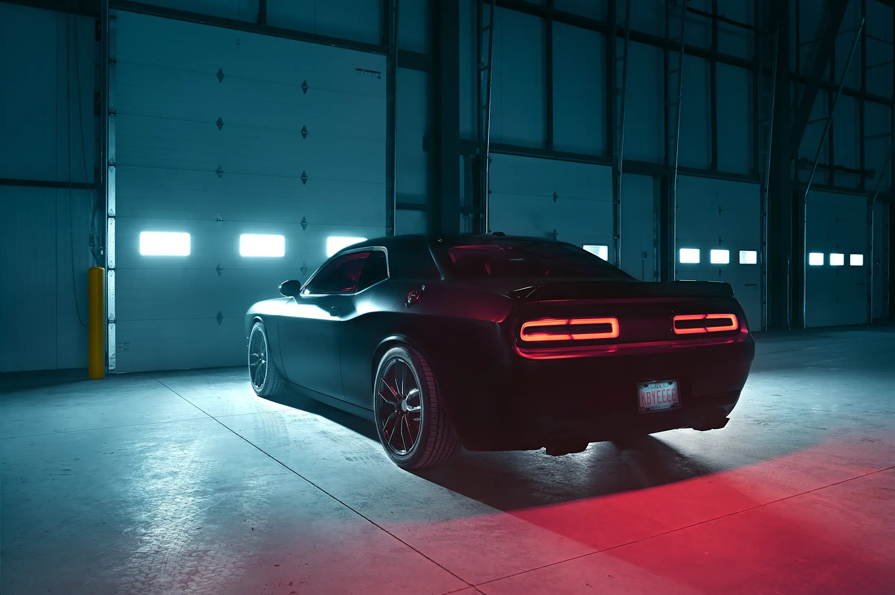
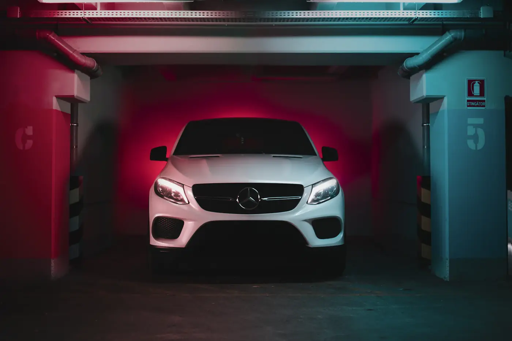
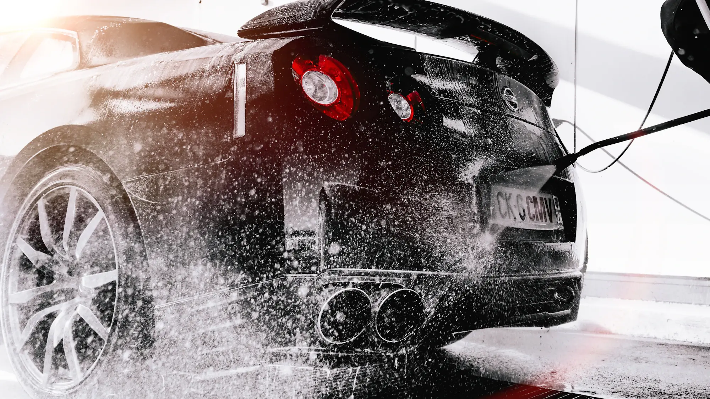
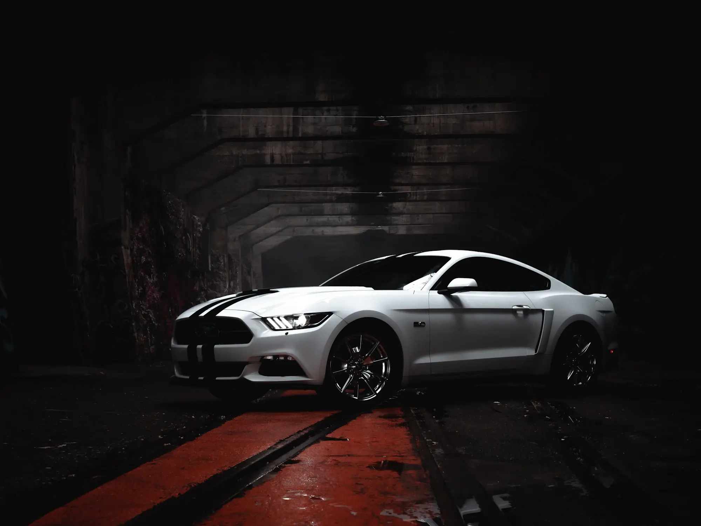

La lumière ne ment pas.
Correction de vernis, céramique et film PPF, en cabine fermée à Plan-les-Ouates.
3 créneaux en novembre

Voile, micro-rayures, calcaire Après, 92 GU
Correction 2 étapes + céramique 5 ans
Avant. Après.
Micro-rayures de lavage, voile, traces de calcaire : c’est ce que révèle une lampe d’inspection sur 9 voitures sur 10 qui entrent à l’atelier.
- +51 %
- de brillance mesurée au glossmètre sur cette voiture.
- 3 µm
- de vernis retirés en moyenne, sur 110 µm d’épaisseur d’origine.
- 22 h
- de travail à la main, réparties sur trois jours.
- 5 ans
- de protection garantie par écrit, avec contrôle annuel.
4,9212 avis clients
« Ils m’ont montré au glossmètre ce que j’avais avant et après. Je n’avais jamais vu ma voiture comme ça, même neuve. »
Marc A.911 Carrera S, céramique 5 ans
« Voiturier à l’heure, rapport photo complet, et un PPF invisible à un mètre. C’est rare de trouver ce niveau en Suisse romande. »
Sofia L.Taycan, PPF intégral
« Ils ont refusé de polir un panneau trop fin plutôt que de le gâcher. C’est exactement pour ça que je reviens. »
Julien R.DB11, correction 3 étapes
Six métiers, une exigence.
Les prix indiqués s’entendent pour un coupé ou une compacte. Chaque devis est confirmé après inspection de la voiture à l’atelier.
Configurer mon forfaitCorrection de vernis
Polissage en une à trois étapes pour éliminer micro-rayures, hologrammes et voile.
1 à 3 joursdèsCHF 890Protection céramique
Revêtement 9H en deux couches. Brillance, effet perlant, entretien simplifié.
1 jourdèsCHF 690Film de protection PPF
Polyuréthane autocicatrisant, brillant ou mat. Face avant ou carrosserie intégrale.
2 à 5 joursdèsCHF 2 200Intérieur et cuir
Nettoyage vapeur, extraction, soin et protection des cuirs, Alcantara et ciels de toit.
1 jourdèsCHF 480Jantes et étriers
Démontage, décontamination complète, céramique haute température sur jantes et étriers.
½ jourdèsCHF 390Préparation concours
Pour une vente, une présentation ou un concours d’élégance. Chaque détail, jusqu’aux passages de roue.
Sur devisVotre forfait, au franc près.
Cinq étapes. Aucun raccourci.
Le même protocole pour une citadine ou une hypercar. Chaque étape est photographiée et consignée dans le rapport qui vous est remis avec la voiture.
| Étape | Durée | Ce qui est fait | Contrôles |
|---|---|---|---|
Diagnostic à la lampe | ~ 1 h | Inspection sous éclairage 6 500 K et mesure de l’épaisseur de vernis sur chaque panneau. On sait exactement ce qu’on peut retirer, et ce qu’on ne touchera pas. | Jauge ± 1 µm Glossmètre Photos de référence |
Décontamination | ~ 4 h | Prélavage, lavage à deux seaux, décontamination ferreuse et argile. Le vernis doit être parfaitement nu avant le premier passage de machine. | pH neutre Eau osmosée Argile synthétique |
Correction | 8 à 20 h | Polissage panneau par panneau, avec contrôle de l’épaisseur entre chaque passe. Les zones fragiles, arêtes et plastiques sont protégées à la main. | Rotative et excentrique 3 grains de polish Contrôle IPA |
Protection | ~ 6 h | Application de la céramique ou pose du film dans la cabine filtrée, puis séchage infrarouge. La voiture reste 24 h sous surveillance avant toute sortie. | Cabine 21 °C Séchage IR Contrôle 24 h |
Remise des clés | ~ 45 min | Présentation sous la lampe, rapport photo avant et après, conseils d’entretien et certificat de garantie. Livraison à domicile si vous le souhaitez. | Rapport PDF Certificat Kit d’entretien |

420 m², zéro poussière.
- Cabine filtrée
- 21 °CTempérature et hygrométrie constantes pour la céramique et le film.
- Capacité
- 1 voitureÀ la fois en correction. Jamais deux chantiers sur la même équipe.



Avant de réserver.
Faut-il une céramique sur une voiture neuve ?
C’est le meilleur moment. Le vernis n’a pas encore subi de lavage agressif : une correction légère suffit, et la protection fige l’état d’origine. On recommande de la poser dans les trois premiers mois.
Céramique ou film PPF, que choisir ?
La céramique protège contre les contaminants, les UV et les micro-rayures de lavage. Le PPF absorbe les impacts de gravillons et se répare à la chaleur. Pour une sportive qui roule sur autoroute, on combine souvent PPF sur la face avant et céramique sur le reste.
Combien de temps ma voiture reste-t-elle à l’atelier ?
De une journée pour une protection simple à une semaine pour un PPF intégral. Le configurateur vous donne la durée exacte selon votre forfait. Le voiturier vient la chercher et la ramène, sans frais dans le canton de Genève.
Comment entretenir la voiture ensuite ?
Lavage à la main ou sans contact, jamais de rouleaux. Un kit d’entretien est fourni, et le contrôle annuel inclus dans la garantie permet de raviver la protection.
Que couvre la garantie ?
La tenue de la protection sur la durée indiquée, attestée par un certificat nominatif lié au numéro de châssis. Elle suit la voiture en cas de revente, ce qui rassure aussi l’acheteur.
Un diagnostic, offert.
- Atelier
- Chemin du Pré-Fleuri 5
1228 Plan-les-Ouates - Horaires
- Lundi au vendredi, 8 h à 18 h 30
Samedi, 9 h à 13 h - Téléphone
- +41 22 794 46 10
- Voiturier
- Offert dans le canton de Genève